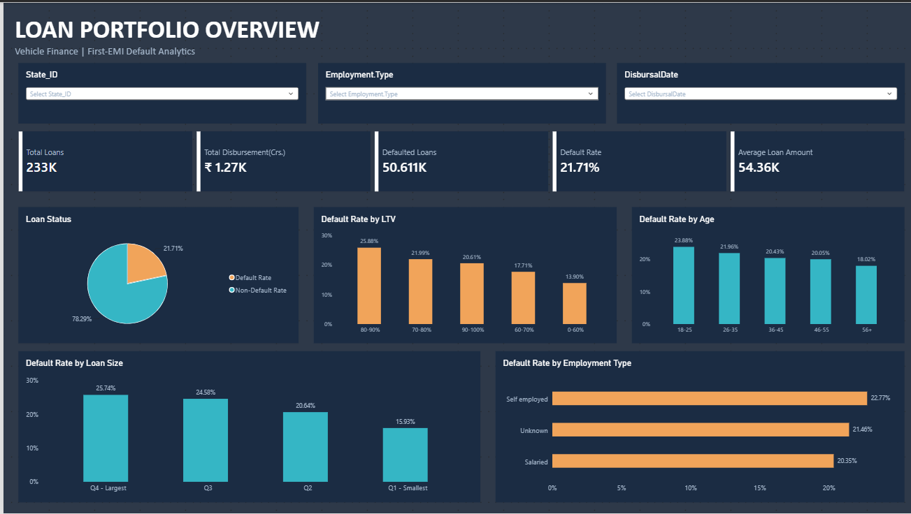
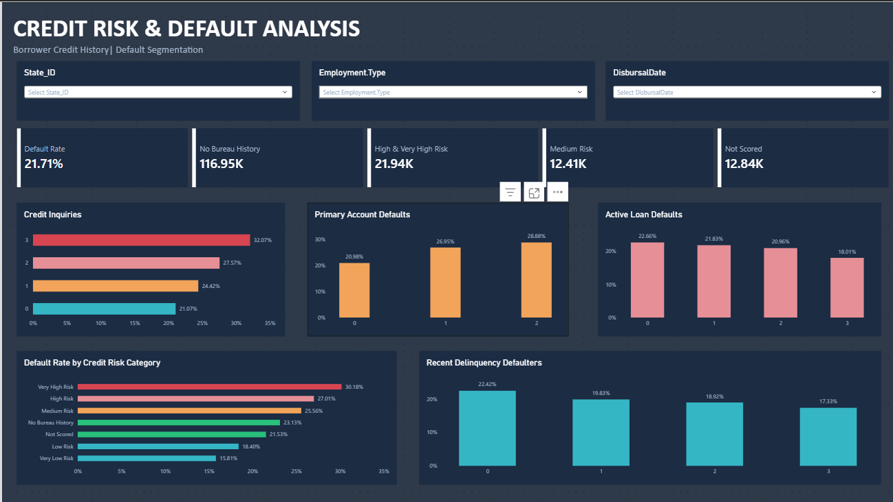

Higher LTV, higher observed risk
Default incidence rose from 13.90% in the 0–60% LTV band to 25.88% at 80–90%. The 90–100% band recorded 20.61%, but included only 883 loans.
CASE STUDY 02 Credit risk
Finding early repayment risk across a large lending portfolio.
THE BUSINESS QUESTION
A historical vehicle-finance dataset with 41 source columns, 22 encoded state IDs, and 82 branches. Each record represents one loan; the outcome is whether a payment default occurred on its first EMI due date.
FROM RAW DATA TO INSIGHT
Connected MySQL to pandas through SQLAlchemy and PyMySQL. Checked the 233,154 records, source types, missing fields, and unique identifiers; no duplicate UniqueID values were found.
Retained all loans, labelled 7,661 missing employment values as Unknown, parsed dates, and calculated age at disbursement rather than at the time of analysis.
Created LTV, loan-size, age, bureau-risk, prior-default, delinquency, and inquiry groups. Kept No Bureau History separate from scored risk tiers.
Calculated loan counts, defaults, rates, and disbursements, then developed a two-page Power BI dashboard with five core portfolio KPIs and state, employment, and date filters.
THE FINDINGS
First-EMI default by bureau segment
Observed loan-level default rates. Report, p. 9. No bureau history is a separate population.
Default incidence rose from 13.90% in the 0–60% LTV band to 25.88% at 80–90%. The 90–100% band recorded 20.61%, but included only 883 loans.
Very High Risk borrowers recorded 30.18% defaults, compared with 15.81% for Very Low Risk. Two or more previously defaulted primary accounts were associated with a 28.88% rate.
Borrowers with three or more credit inquiries recorded 32.07% defaults, versus 21.07% among borrowers with none.
116,950 loans — 50.16% of the portfolio — had no bureau history. Their 23.13% default rate supports separate treatment rather than assigning a conventional score tier.
THE REPORTING LAYER
Original Power BI screenshots from my report. Open an image to inspect the full-size dashboard.


FROM FINDING TO NEXT STEP
Proposed next steps based on the analysis.
First-EMI default is not lifetime default probability or realized financial loss. Disbursement is original principal advanced, not outstanding exposure. Segment comparisons are descriptive and require validation across additional lending cohorts before policy deployment.
Loan Default & Credit Risk Analysis Report, pp. 3–12; resume.
Open project report (PDF)